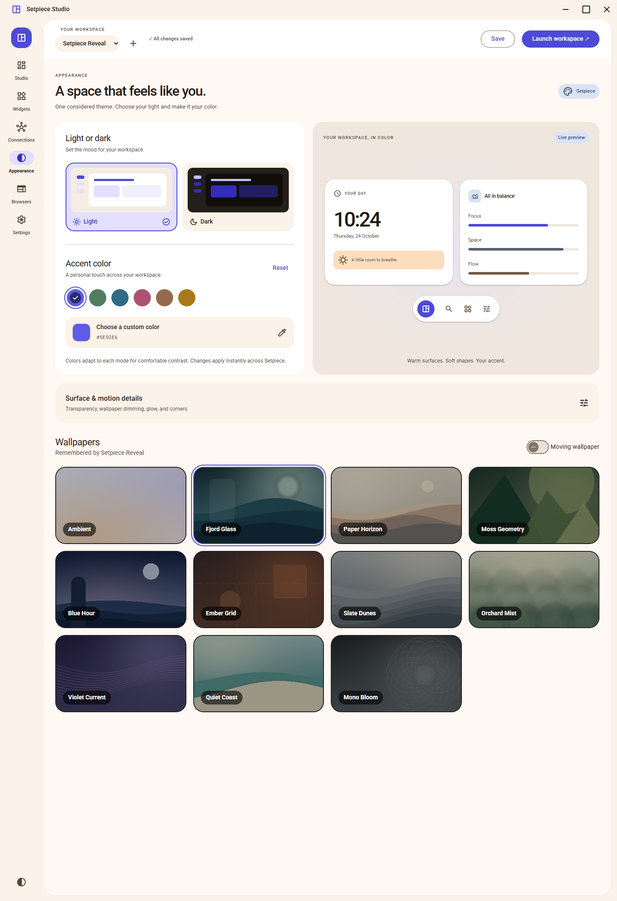

Arrange native applications
Assign open Windows apps to tiles. Drag, resize, split, and snap tiles in the Studio canvas.
Arrange applications, widgets, and browser sessions in saved layouts.
Configure each display, then launch the workspace from Setpiece.
Source available · Free for noncommercial use
Studio — edit layouts and assign content to each tile.
Full-size screenshotSetpiece manages the layout around the applications you already use.
Assign open Windows apps to tiles. Drag, resize, split, and snap tiles in the Studio canvas.
Choose the displays a profile uses and give each one its own layout. Save profiles for different setups.
Use clocks, notes, and device widgets, or configure optional service integrations from the widget library.
Create named WebView2 browsers with saved tabs, then use them across your workspace profiles.
Enable fullscreen inside a browser tile to expand a video without covering the other tiles on your display.
Stop the workspace or close Setpiece to restore the original application windows and taskbars.
Switch themes, choose an accent color, and save a wallpaper with each profile.
View appearance settings
The repository provides the source code. A prebuilt download is not currently published.
cd UI
pnpm install --frozen-lockfile
cd ..
.\build.ps1Profiles and browser data are stored locally. Optional integrations may require separate accounts or hardware. Screenshots use a demo profile; Weather is disconnected.